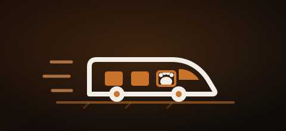

Desde julio de 2026, RENFE permite viajar con perros de hasta 40 kg en sus trenes de larga y media distancia. Es una noticia estupenda para millones de familias con perros grandes, que hasta ahora tenían muy complicado moverse en tren con su compañero.
Pero hay una excepción que nos toca muy de cerca: los perros PPP —como Maya, una Rottweiler de 40 kg— siguen sin poder subir. Te contamos las dos caras de la noticia: todo lo bueno que trae... y por qué creemos que deja fuera, injustamente, a perros que lo cumplen todo.
✅ Las ventajas: qué permite ahora RENFE
Empecemos por lo positivo, porque el cambio es grande y muy esperado:
Perros de hasta 40 kg
Se amplía muchísimo el límite anterior. Viajan en los coches identificados como "dog friendly".
En casi todos los trenes
AVE, Avlo, Alvia, Euromed, Intercity, AVANT y Media Distancia (con algunas excepciones).
A tu lado
Puede ir en el suelo o en el asiento de la ventanilla, atado a tu plaza (en AVANT y MD, en el suelo).
Kit de viaje gratis
RENFE entrega alfombrilla y funda para el asiento, sin coste (excepto en Media Distancia).
Precio claro
Complemento de 40 € por trayecto en AVE, Alvia, Euromed, Avlo e Intercity; tarifa general en AVANT y MD.
Fácil de reservar
Plaza asignada automáticamente en un único coche. Puedes comprar el billete hasta 24 h antes del viaje.

📋 Requisitos y obligaciones para viajar
RENFE exige unas condiciones muy razonables, pensadas para la seguridad y comodidad de todos:
- Seguro obligatorio de responsabilidad civil de la mascota.
- Cartilla de vacunación o pasaporte de animales, al día.
- El viajero debe ser mayor de edad.
- Correa no extensible de máximo 1,5 m y bozal en la estación. A bordo, bozal en el embarque y desembarque; durante el trayecto, solo si el tutor lo considera necesario.
- Kit de limpieza propio (empapador, bolsas para heces, toallitas, spray desinfectante y antiolor).
- El perro permanece en su plaza asignada y no se le deja solo en ningún momento.
- Recomendado: no darle de comer en las 3 horas previas y pasearlo antes de subir.
🎟️ Cómo comprar el billete
- Comprueba en la web de RENFE que tu tren tiene la opción (aparece un pequeño icono de mascota).
- Elige tu tarifa (Estándar en AVE, Alvia, Euromed e Intercity; Básica en Avlo; ida o ida y vuelta en AVANT y MD).
- Añade el complemento para perro de hasta 40 kg (40 € en AVE, Alvia, Euromed, Avlo e Intercity; tarifa general en AVANT y MD).
- Lleva la documentación del perro el día del viaje. Sin ella, no podrás viajar.
🚫 Pero hay un problema: Maya no puede subir
Aquí llega la otra cara de la noticia. La propia normativa de RENFE lo dice con estas palabras:
El veto a los perros PPP
Maya pesa 40 kg exactos —dentro del límite— y cumple todos y cada uno de los requisitos: seguro de responsabilidad civil, cartilla al día, adiestramiento, correa corta, bozal, kit de limpieza... Pero no puede viajar por una sola razón: su raza. No por su comportamiento. No por su tamaño. Por una etiqueta.

📣 Nuestra reivindicación
Creemos que la peligrosidad de un perro no depende de su raza, sino de su educación y de la responsabilidad de quien lo cuida. Vetar por raza a perros que cumplen todas las condiciones de seguridad perpetúa un estigma injusto — el mismo que llena las protectoras de Rottweilers y otros PPP abandonados.
Pedimos algo sencillo: que se valore al perro por su comportamiento y el cumplimiento de los requisitos, no por el nombre de su raza. Maya viaja con bozal, correa y seguro, y se porta mejor que muchos perros que sí tienen permitido subir. Merece el mismo billete que los demás.
🐾 Si esta historia te remueve algo, ayúdanos a difundirla. Cada vez que se comparte, un poco más de gente entiende que un Rottweiler bien cuidado no es una amenaza — es familia. Adopta, no compres. Y basta de juzgar por la raza.